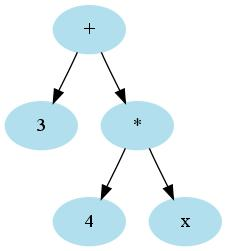
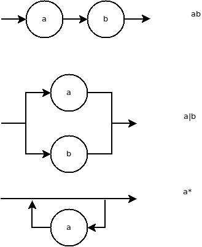

if ( radix >= 0.0) y = sqrt(radix);if radix >= 0:
y = sqrt(radix)
print(y)
else:
print('error')
3 + 4 * x

Ex. function has
Body has
movl $4, %eax mull x, %eax addl $3, %eax
result = (a + b) * (c + d)
movl a, %eax addl b, %eax movl c, %ebx addl b, %ebx mull %ebx, %eax movl %eax, result
for (i = 0; i < n; i++) {
t = u * v;
a[i] = t + i;
}
int max(int x, int y) { return x > y ? x : y; }
Translate max(x, 0) into x > 0 ? x : 0, avoid cost of function call
An E followed by a (possibly empty) sequence of digits
E123 E9 E

. matches any character\ is an escape. For example, \. is a period, \\ a backslash[+-]?[0-9]+, or maybe [+-]?\p{N}+
0[Xx][0-9A-Fa-f]+".*". will match a quote. Better: "[^"]*"\" in a quoted string. "([^"\\]|\\.)*"\x1B?import scala.util.matching._
val regex = "[0-9]+".r
regex.findAllIn("99 bottles, 98 bottles").toList
List[String] = List(99, 98)
Check whether beginning matches
regex.findPrefixOf("99 bottles, 98 bottles").getOrElse(null)
String = 99
val regex = "([0-9]+) bottles".r
val matches = regex.findAllIn("99 bottles, 98 bottles, 97 cans").matchData.toList
matches : List[Regex.Match] = List(99 bottles, 98 bottles)
matches.map(_.group(1))
List[String] = List(99, 98)

lab6/report.txt inside the Git repo. Include the coder's name in the report! Write down regular expressions for
/* ... */Use the Scala Regex.findAllIn method to check your work from Step 1 with the strings
"3.14 -3.14 +3.14 3. 3 .3 3.14E2 3.14E+2 3.14E-2 3.14e100"
"'a' '\\n' '\\\\' '\\'' '\\x1b' '\\033'"
"/* foo */ /** foo */ /**/**/**/ /*/*/*/"
What results do you get?
Tip: In Java, it is unpleasant to deal with strings containing backslashes and quotes. For example, the regular expression ([^"\\]|\\.)*, as a Java string, is "([^\"\\\\]|\\\\.)*" Scala has an alternate way of specifying strings. When strings are enclosed in """...""", nothing inside is escaped. (Of course, you can't have a """ inside.) For example, """([^"\\]|\\.)*""".
In a lexer, we specify a set of patterns that are tried in sequence. For example, a simple language might have the following token types:
if|def|val\p{L}(\p{L}|\p{N}|_)*[+-]?\p{N}+ [+*/%<=>-][(){};]\p{Z}+Note that the order matters. We want if, def, val recognized as reserved words, not identifiers.
In this step, write a function firstMatch(input : String, patterns : List[Regex]): String that returns the first match in the input string for any of the regular expressions or null if there is no match. For example,
val patterns = List("if|def|val".r, """\p{L}(\p{L}|\p{N}|_)*""".r,
"""[+-]?\p{N}+""".r, "[+*/%<=>-]".r, "[(){};]".r, """\p{Z}+""".r
)
val input = "if(x<0) 0 else root(x);"
firstMatch(input, patterns)
String : if
firstMatch(input.substring(2), patterns)
String : (
What is the code for your function?
Hint: This is simple recursion. If the first regex matches, return the match, otherwise call firstMatch(input, patterns.tail).
Write a function tokens(input : String, patterns : List[Regex]) : List[String] that returns a list of matching tokens. For example,
tokens(input, patterns) List[String] = List(if, (, x, <, 0, ), , 0, , else, , root, (, x, ), ;, )
That's again simple recursion. If the input is empty, return the empty list. Otherwise, get the first match. If it's null, return the empty list. Otherwise, recursively call tokens(input.substring(first.length), patterns).
What is the code of your function?